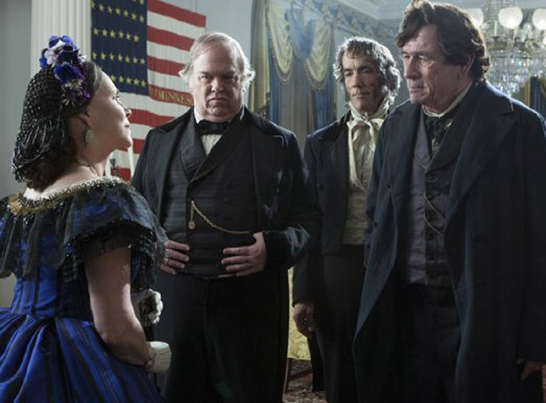
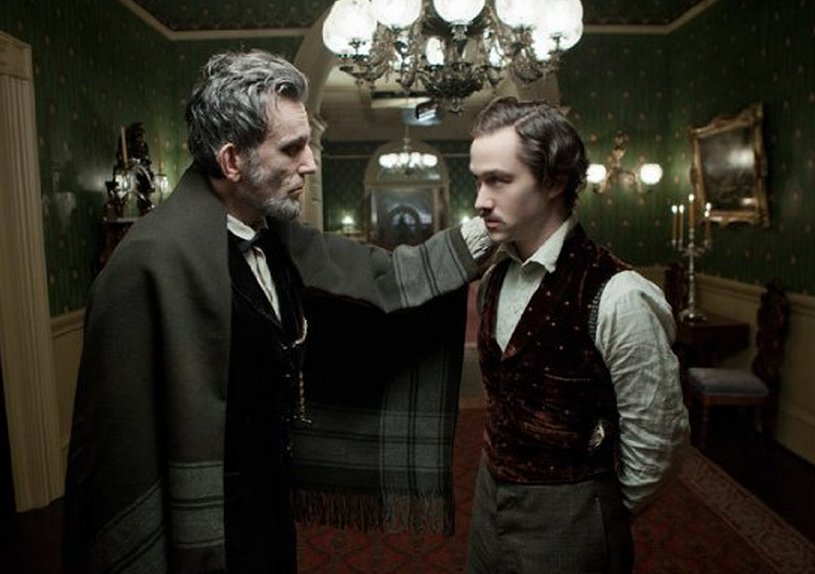

|
Steven Spielberg's Lincoln is a historical biopic more concerned with depicting the
16th president's log-rolling politics than his log-splitting childhood.
Lincoln, one of many high-profile films this season based on real events, has
been warmly embraced by critics and audiences. But there's another group whose opinion
matters -- historians.
"There have been other movies about Lincoln," said James McPherson, a Civil War
|
Historian James McPherson
|
historian, Lincoln biographer and Pulitzer Prize-winning author of Battle Cry of
Freedom, in a recent interview after seeing the film. "They tended to reflect a
romanticized Lincoln, almost a mythologized Lincoln. This comes closer to reality. This
shows Lincoln's exhaustion, his gauntness -- and his storytelling."
McPherson, a professor emeritus at Princeton University, was one of many Civil War
historians who met with Spielberg and screenwriter Tony Kushner early on in the writing
process to help provide background for the film. Initially, Spielberg had optioned Doris
Kearns Goodwin's four-man biography, Team of Rivals: The Political Genius of Abraham
Lincoln. Ultimately Kushner used that book as a jumping-off point for the
Lincoln screenplay, which depicts the last weeks of Lincoln's life in 1865, when
the president pushed for passage of the 13th Amendment to abolish slavery.
In focusing on a short span of time, the movie delves deeply into Lincoln's
personality, his political tactics and relationship with his cabinet and family. As a
result, McPherson said he considers Lincoln, which stars Daniel Day-Lewis in the
title role, the most accurate screen portrayal of the great leader that he's ever seen.
We asked the historian to help answer some of our questions after seeing the film
(Warning: If you haven't seen Lincoln yet, this interview contains some spoilers):
RK: Daniel Day-Lewis' voice is quite high in the movie. Did Lincoln really sound
like that?
JM: Lincoln's voice was described as being fairly high-pitched, rather than the
deep baritone used by earlier actors. I think Lincoln may have had a little bit more of an
Indiana-Kentucky twang than Mr. Day-Lewis has. Lincoln rarely if ever used profanity, and
some of the dialogue calls for him to do that. I thought that was a bit jarring.
RK: In the opening scene, Lincoln is shown on the street, chatting casually with
some soldiers. Was he that accessible to ordinary people?
JM: He was accessible, but usually in his office in the White House. He would in
effect hold office hours and people could come to see him. The opening scene where he's
basically out on the street talking to soldiers is probably pretty fictional.
RK: James Spader supplies a lot of the movie's comic relief as W.N. Bilbo, a
|

This exchange between Mary Todd Lincoln (Sally Field) and Thaddeus Stevens
(Tommy Lee Jones), which takes place about halfway through Spielberg's Lincoln, has
no basis in historical fact.
|
lobbyist the White House enlisted to help pass the 13th Amendment. How realistic is the
portrayal of his backroom deal-making?
JM: It's overdone, but the effort to sway lame-duck Democrats through promises
of patronage either for themselves or political supporters was basically accurate. Bilbo
was a real person, but a certain amount of dramatic liberty is taken with the character.
[Secretary of State William] Seward did use some New York politicians to carry out this
effort, and in that respect there's a certain amount of accuracy.
RK: Sally Field plays Mary Todd Lincoln as slightly unhinged, but smart and a
bit of a political player herself. Is that a fair representation of the first lady?
JM: This movie reflects a fairly sympathetic reading of Mary Todd's character,
although there are allusions to her going off the rails in 1862. The one somewhat
unpersuasive scene was when she was greeting Thaddeus Stevens and some of the other
congressmen at the White House reception and started bandying with them. It was an effort
to give Sally Field some opportunity to portray Mary's wittiness and feistiness, which she
certainly possessed, but I don't think it really happened.
RK: In the movie, Lincoln's youngest son, Tad [Gulliver McGrath], drives his
pony through the White House, gets into the president's war maps and gets away with a lot
of mischief. Did it really happen that way?
JM: That was pretty much true. When [Lincoln's third son] Willie was alive, the
two of them together had free rein in the White House, much to the consternation of
[Lincoln's private secretaries] John Hay and John Nicolay and much to the consternation of
some members of the Cabinet. Lincoln was a very indulgent father toward those two boys,
but not toward his older son, Robert.
RK: Robert Todd Lincoln is played by Joseph Gordon-Levitt, who's a heartthrob to
many 2012 moviegoers. Was the president's eldest son actually cute?
JM: He was pretty good looking. He did look a fair amount like the young actor
who portrayed him. He had the reputation of being a little bit of a stuffed shirt. He did
desperately want to get into the Army and I think for the reasons that are portrayed in
|

Abraham Lincoln, as portrayed by Daniel Day-Lewis,
and Robert Lincoln, as portrayed by Joseph Gordon-Levitt
|
the movie--he felt his reputation would be forever smirched if he didn't. He spent most of
the war at Harvard as a student. Although I'll tell you one thing that bothered me--I
thought it was out of character when Lincoln slapped Robert.
RK: Some have criticized the small, relatively passive roles of the black
characters in the movie--did Lincoln know many black people personally?
JM: He didn't have a lot of personal black friends, but he had grown to admire a
lot of black people he knew abstractly. One thing the movie leaves out is his relationship
with Frederick Douglass. Lincoln came to know Douglass and admire him greatly, and
Douglass did come to the White House.
RK: Radical Republican Congressman Thaddeus Stevens (Tommy Lee Jones) is
revealed as having a romantic relationship that could have driven his avid abolitionism.
Did that relationship really exist?
JM: It was widely rumored at the time. There's no proof one way or the other.
Stephens kept that pretty private. He was not married and had no children, but the truth
is we really don't know.
Source: Rebecca Keegan in The Los Angeles Times (November 28, 2012).
|